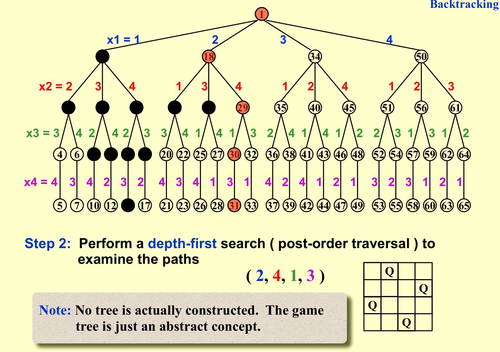
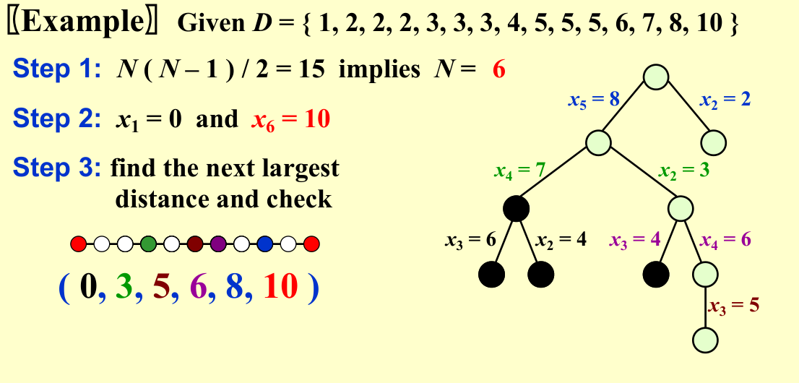
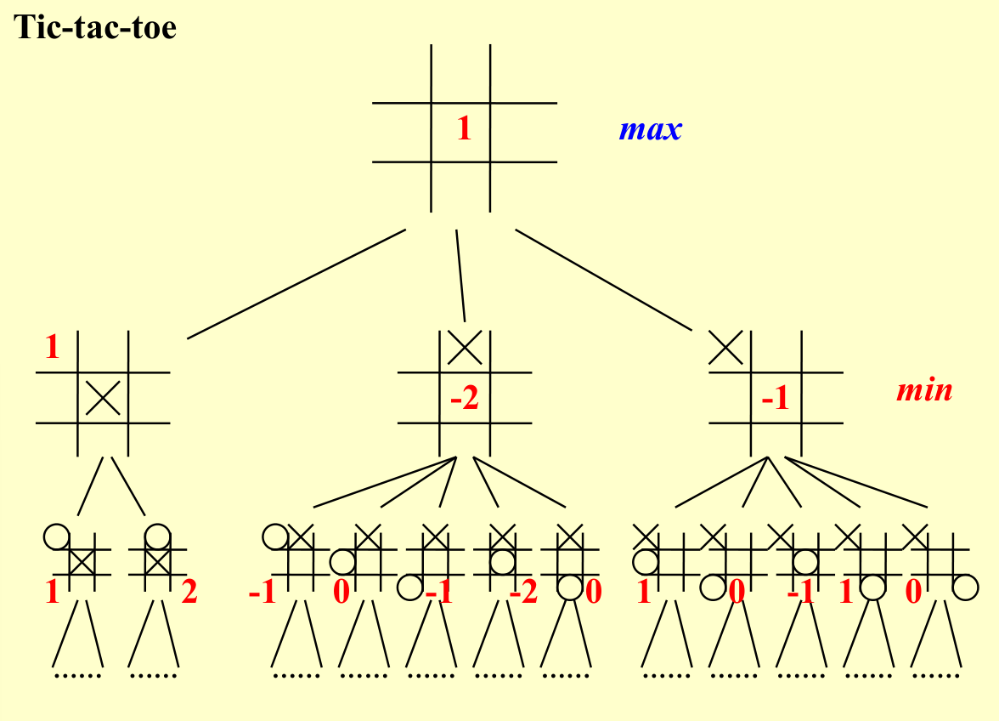

Chapter 6 | Search and Backtracing
约 1844 个字 60 行代码 11 张图片 预计阅读时间 19 分钟
搜索，也就是对状态空间进行枚举，通过穷尽所有的可能来找到最优解，或者统计合法解的个数。
搜索有很多优化方式，如减小状态空间，更改搜索顺序，剪枝等
link
OI-Wiki:https://oi.wiki/search/backtracking/
Hello-Algorithm:https://www.hello-algo.com/chapter_backtracking/backtracking_algorithm/
Fundamental Search
搜索通常可以用搜索树的形式表现

抽象地来说，解决一个问题，也就是枚举所有的状态空间找到解集，我们总是可以用搜索树的模型来设计搜索算法
def TREE_SEARCH(problem, strategy):
"""
Function to perform tree search based on the given problem and strategy.
"""
# Initialize the search tree using the initial state of the problem
search_tree = initialize_search_tree(problem.initial_state)
while True:
# If there are no candidates for expansion, return failure
if not search_tree.has_candidates():
return "failure"
# Choose a leaf node for expansion according to the strategy
leaf_node = strategy.choose_leaf_node(search_tree)
# If the node contains the goal state, return the corresponding solution
if problem.is_goal_state(leaf_node.state):
return leaf_node.solution()
# Else, expand the node and add the resulting nodes to the search tree
search_tree.expand_node(leaf_node)
Definition with search tree
\(b\):the maximum edge on a node
\(d\):the maximum depth of a search tree
BFS
BFS 全称是 Breadth First Search，中文名是宽度优先搜索，也叫广度优先搜索。
是图上最基础、最重要的搜索算法之一。
所谓宽度优先。就是每次都尝试访问同一层的节点。 如果同一层都访问完了，再访问下一层。
这样做的结果是，BFS 算法找到的路径是从起点开始的最短合法路径。换言之，这条路径所包含的边数最小
Analysis on BFS
BFS 通常采用 FIFO queue 实现，因此 Time Complexity:\(O(b^d)\); Space Complexity:\(O(b^d)\)
另外，时间复杂度较难优化，而 \(b^d\) 的空间复杂度在处理现实世界的问题中往往显得过于庞大
DFS
DFS 为图论中的概念。在搜索算法中，该词常常指利用递归函数方便地实现暴力枚举的算法，与图论中的 DFS 算法有比较相似，暂不赘述。
该类搜索算法的特点在于，将要搜索的目标分成若干「层
Analysis on DFS
DFS 通常采用 LIFO queue(stack) 实现，因此 Time Complexity:\(O(b^d)\); Space Complexity:\(O(bd)\)
这里的空间复杂度就远比 BFS 合理，因此在解决实际问题的搜索中，DFS 搜索算法往往得到更广泛的应用
* A* Search
A* （A* search algorithm，A * 读作 A-star
A* 算法的基本思想：
-
启发式函数：A* 算法使用启发式函数 \(h(n)\)，该函数估计从当前节点 \(n\) 到目标节点的代价。通常选择一个简单且有效的启发式函数（比如曼哈顿距离
） ，以确保算法的效率。 -
评估函数：A* 维护一个评估函数 \(f(n)\)，用于衡量从起点到目标节点的总代价。评估函数由两部分组成： \(f(n)=g(n)+h(n)\)
\(g(n)\)：从起点到当前节点 \(n\) 的实际代价。
\(h(n)\)：从当前节点 \(n\) 到目标节点的估计代价。
-
优先队列：A* 使用优先队列（通常实现为最小堆）来存储待扩展的节点，优先级由评估函数 \(f(n)\) 决定。算法每次从队列中取出 \(f(n)\) 最小的节点进行扩展。
Search with backtracing
Rationale of the backtracing algorithms @cy's ppt
回溯法是一种经常被用在搜索中的技巧，包括先前提到的我们较为熟悉的 DFS 和 BFS。
回溯法的本质是：走不通就回头。
回溯法的基本思路如下 :
-
构造空间树；
-
进行遍历；
-
如遇到边界条件，即不再向下搜索，转而搜索另一条链；
-
达到目标条件，输出结果。
Eight Queens
八皇后问题是一个非常经典的问题，所以简单来说，就是满足 8*8 的棋盘中 8 个皇后彼此不能互相攻击

这里为了简化分析我们把模型退化成四皇后问题，同时为了方便叙述，直接搬了 PPT 上的图片

注意这里为了方便描述，\(x_i\) 表示第 \(i\) 行的 Queen 放置的位置（列数）

我们发现，虽然问题的解空间是 \(A_4^4 = 4!\)，这也与叶子节点数对应；但是在进行搜索时，存在一些由于已经不满足题意而不需要继续往下搜索的分支，对应图中我们将这种结点标黑，其实这就是一种剪枝的思想，在层数上对我们的搜索进行优化（事实上这里我们运用的深度优先搜索本身就蕴含了剪枝的思想）
The Turnpike Reconstruction Problem
收费站重建问题 (The Turnpike Reconstruction Problem) 描述的是一条被抽象为直线的公路上，有 \(N\) 个收费站（\(x_1,x_2,...,x_N\)
solution
大概思路就是，脑海中有一条从左往右的数轴，首先假设 \(x1=0\)，那么很显然 \(x_N=max{D}\)。同时我们也得到这条线段的长度为 max{D}。接下来在 \(D\) 中从大到小取出元素，则必定追加在 \(x_1\) 右侧或 \(x_N\)左侧，以此类推
参考图
存在一定误导性，仅供参考

Reference Code
bool Reconstruct (DistType X[], DistSet D, int N, int left, int right) {
/* X[1]...X[left-1] and X[right+1]...X[N] are solved */
bool Found = false;
if (Is_Empty(D))
return true;/* solved */
D_max = Find_Max(D);
/* option 1: X[right] = D_max */
/* check if |D_max-X[i]|∈D is true for all X[i]'s that have been solved */
OK = Check(D_max, N, left, right);
if (OK) {
X[right] = D_max;
for (i = 1; i < left; i++) Delete(|X[right]-X[i]|, D);
for (i = right + 1; i <= N; i++) Delete(|X[right]-X[i]|, D);
Found = Reconstruct(X, D, N, left, right - 1)
if(!Found) { /* if does not work, undo */
for(i = 1; i < left; i++) Insert(|X[right]-X[i]|, D);
for(i = right + 1; i <= N; i++) Insert(|X[right]-X[i], D)
}
}
/* finish checking option 1 */
if (!Found) { /* if option 1 does not work */
/* option 2: X[left] = X[N] - D_max */
OK = Check(X[N] - D_max, N, left, right);
if (OK) {
X[left] = X[N] - D_max;
for (i = 1; i < left; i++) Delete(|X[left] - X[i]|, D);
for (i = right + 1; i<= N; i++) Delete(|X[left] - X[i]|, D);
Found = Reconstruct(X, D, N, left + 1, right);
if (!Found) {
for(i = 1; i < left; i++) Insert(|X[left]-X[i], D);
for (i = right + 1; i <= N; i++) Insert(|X[left]-X[i], D);
}
}
/* finish checking option 2 */
} /* finish checking all the options */
return Found;
}
Tic-tac-toe Game
在一个只有两个玩家的零和博弈中，如果定义一个与某一个玩家的胜率直接相关的量，那么一个玩家的策略肯定总是试图最大化这个量，对方的策略肯定总是试图最小化这个量
Two-Step Game
在一个最简单的模型 : Two-Step Game 中，我们可以看到这样的 MinMax 与 MaxMin 思想
MinMax Game

MaxMin Game
我们可以以 MinMax Game 为例画出这个游戏的 Game Tree (红色箭头代表Min方的策略，蓝色箭头表示Max方的策略，Min方选取了使得Max方取值最小的路)
与这部分知识相关的还有 Von Neumann's Minimax Theorem;Nash Equilibrium 等等，这里不再赘述
如果我们在 Tic-tac-toe 中也定义类似的“收益”： 其中W是在P位置下棋后所有可能的赢法数（按照ppt的意思，“可能形成的连线数”可能表示的更恰当）
我们作为人类玩家，决策的出发点是最小化这个收益；电脑的出发点是最大化这个收益
因而对于先手的电脑来说，就会有这样的一个 Game Tree

alpha-beta 剪枝
简单来说就是放弃做一些不可能带来更多好处的决策判断
alpha 和 beta 的含义如下
- \(\alpha\):Max's best option on path to root
- \(\beta\): Min's best option on path to root
reference graph

详细的说明可以参考 OI-Wiki:Alpha_Beta Pruning